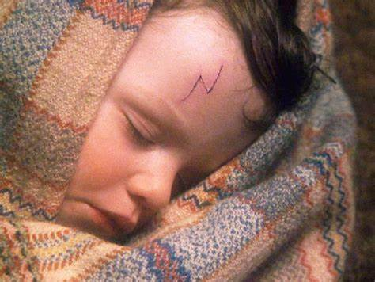
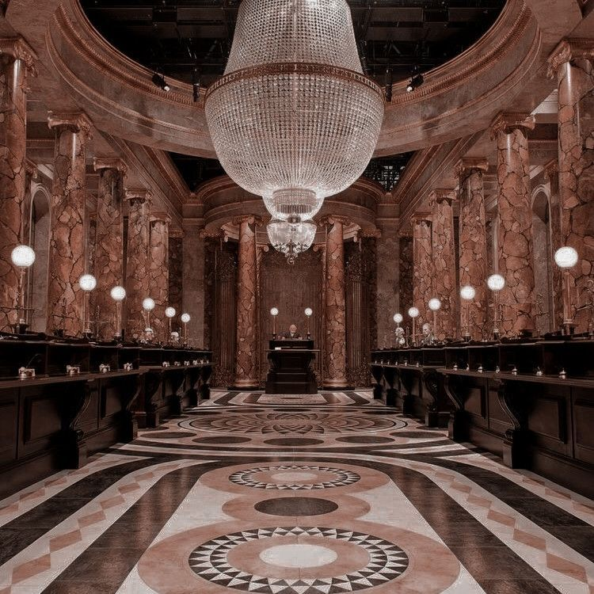
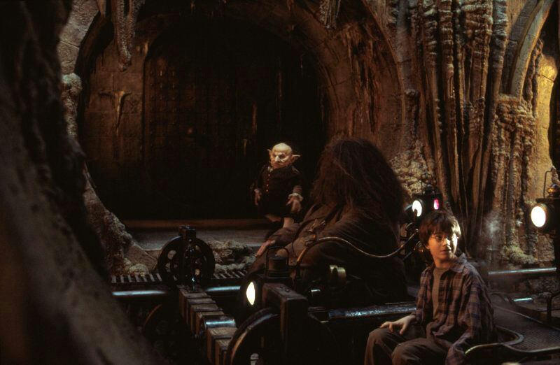
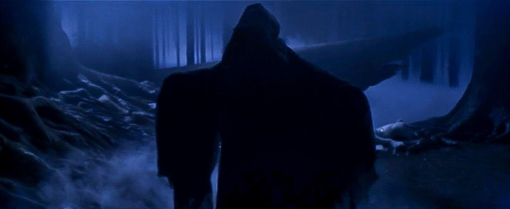

Qual o seu conhecimento sobre Harry Potter
Nome:
Email:
Quem foi o culpado de fazer a cicatriz ao Harry:

Lord Voldemort
Lucius Malfoy
Bellatrix Lestrange
Verificar Resposta
Harry julgava que não tinha dinheiro nenhum até ter ido ver a herança que os pais tinham deixado, qual era o nome do banco onde ele foi buscar o seu dinheiro:

Hogwarts
Gringotts
Caldeirão Furado
Harry e Hagrid foram a um cofre buscar um saco pequeno e sujo, qual era o número do cofre:

723
713
703
Do que é que Voldemort se alimentava para não morrer:

Sangue de centauro
Sangue de unicórnio
Sangue gigantes
Quem é que disse a Harry como é que se ia para a plataforma nove e três quartos:
Fred Weasley
Moly Weasley
Hagrid